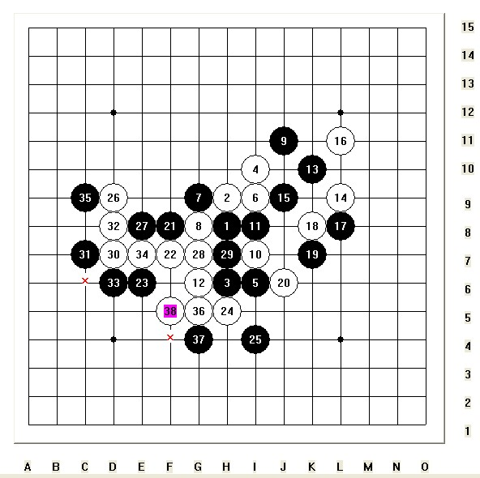

46期名人战第2局
#1 46期名人战第2局 作者：闫荣辉 发表时间：2008-10-20 23:32:50
第46期全日本连珠名人战挑战五番棋对局第二盘
时间:2008年11月19日
地点:大阪府吹田市市立丰一市民中心
结果:冈部宽 八段(执黑) 负 长谷川一人 名人(执白)

按照赛制，在五番对局中，名人只要取得2.5分即算守擂成功，而挑战者必需抢到3分才可坐上名人位。目前，长谷川名人已获得1.5分，再得1分即可，而冈部宽只有0.5分在手，他至少还要准备下到第四盘棋。
第三、四盘对局安排在11月22、23日移师东京。
#2 Re:46期名人战第2局 作者：oddgod 发表时间：2008-10-21 14:57:38
吴镝下过，李一也讲过#3 Re:46期名人战第2局 作者：nara 发表时间：2008-10-21 17:53:28
2楼的兄弟，把地毯传上来分享下。
#4 Re:46期名人战第2局 作者：我爱五子棋伯园 发表时间：2008-10-24 8:54:40
地毯谱上传没有这个必要吧
#5 Re:46期名人战第2局 作者：gerbo 发表时间：2008-10-26 8:51:06
 我尝试了下，但现在有个26卡了壳了，26走17的下三位，也就是25的右下一位，那个点，我拿黑走不出了。汗~请知道的给点提示。
我尝试了下，但现在有个26卡了壳了，26走17的下三位，也就是25的右下一位，那个点，我拿黑走不出了。汗~请知道的给点提示。
#6 Re:46期名人战第2局 作者：gerbo 发表时间：2008-10-26 9:55:14
还剩两个26无法解决，其中一个如上，还一个26走19的下一位。很难走，暂时没想到如何是好~~请知道的能给点提示。谢谢~·~
#7 Re:46期名人战第2局 作者：gerbo 发表时间：2008-10-26 10:15:11
 。。。。
。。。。
#8 Re:46期名人战第2局 作者：屏蔽 发表时间：2008-10-26 20:51:30
6楼嘛意思……我暂且当作26-l5，可以尝试一下27-i4；
7楼：26-k6，27-l4试试。
#9 Re:Re:46期名人战第2局 作者：笑雨辰 发表时间：2008-10-27 1:41:18
引用：
原文由 nara 发表于 2008-10-21 17:53:28 :2楼的兄弟，把地毯传上来分享下。
就是哈
图发出来了
谱也传上来撒